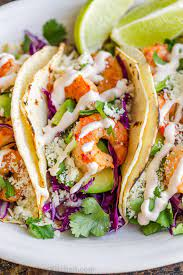

Shrimp Taco

Description
This very particular recipe leaves you with exactly one delicious, garlic, tangy taco.
For those days when you want good food, but not too much of it.
Ingredients
- shrimp
- cabbage
- cheese
- toppings
- tortilla
Steps
- Thaw Shrimp
- Cook Shrimp
- Toast Tortilla
- Assemble Taco using toppings
- Add preferred sauce